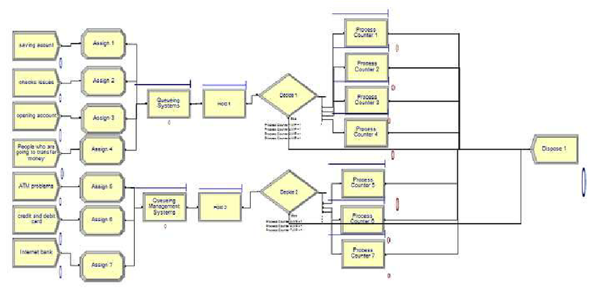

저는 공장 프로세스를 이해하기 위해 한 학기 동안 시뮬레이션 수업에서 Arena라는 시뮬레이션 도구를 학습하였습니다. 자율적으로 공장과 연락해 공장 프로세스를 파악한 후 공장 프로세스 개선을 수행하는 프로젝트를 부여받았습니다.
경기도 화성에 있는 한 고무공장을 섭외한 후 방문해 기계들의 개당생산시간, 이동 경로와 시간 작업자의 작업시간 등을 조사했고 공급해야 하는 양이 많아서 24시간 공장이 돌아간다는 것을 파악했습니다. 정확히 공급해야 하는 양을 파악한 후 모든 정보를 갖고 시뮬레이션하여 어디서 White space와 Waste가 발생하는지 파악했고 기계 대수와 작업자의 동선, 작업위치 등을 재조정해서 공급해야 하는 양을 만족하게 할 수 있도록 공정효율을 개선하였습니다.

저는 제조공학연구실에서 ~부터 ~까지 학부연구생으로 지내며